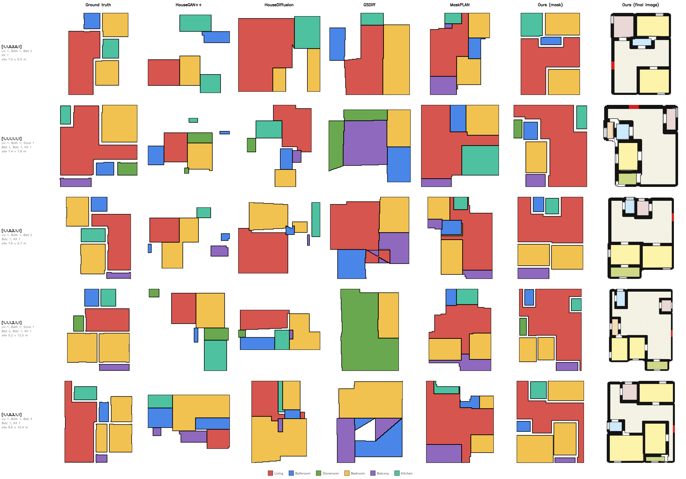
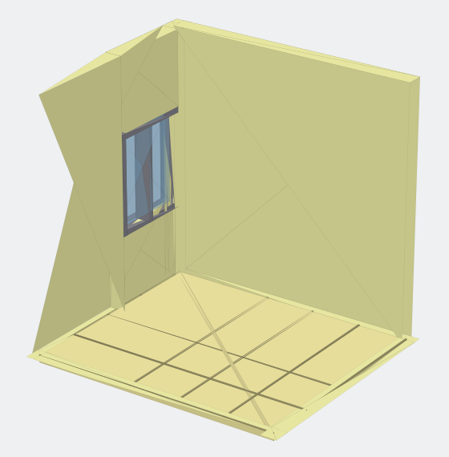
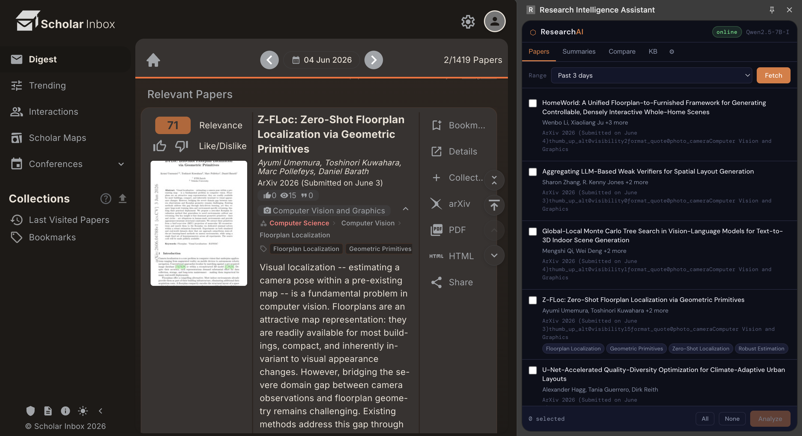

Hermehar Pal Singh Bedi
I am a Ph.D. scholar at IIIT Delhi, working at the intersection of Generative AI, Human-Centered AI and Immersive Computing. Rather than foundational model research, I focus on building AI systems that help people: systems that understand what a person wants, respect the constraints they set, and leave the final decisions in their hands.
My Ph.D. brings this to home design. I develop GAN- and diffusion-based models that generate architectural floorplans from simple, high-level requirements, and then visualise the generated homes in Virtual Reality, so people can explore them at full scale and refine them together with the AI.
More broadly, I work on constraint-aware generation, human-in-the-loop interaction, multimodal AI and AI-assisted spatial reasoning, with the goal of AI that is understandable, controllable and useful in real-world workflows.
Interests: Generative AI · GANs · Diffusion Models · Human-AI Collaboration · Human-Centered AI · Multimodal AI · Spatial Reasoning · Virtual Reality · Immersive Computing
Mail / Scholar / LinkedIn / ResearchGate / GitHub
Updates
- 2026 Submission Submitted two papers to WACV 2027.
- 2026 Submission Submitted two papers to IEEE VR 2027.
- 2025 Service Organised the 16th edition of IndiaHCI at IIIT Delhi.
- 2025 Publication Book chapter on AI for diagnosis and disease prediction published by Springer Nature. [Link]
- 2025 Workshop Ran AI101: AI for Enhancing Business Efficiency, a four-session hands-on workshop organised by IIC, IIIT Delhi.
More service and talks on the Achievements page.
Ongoing Projects

Count2Plan: Can Spatial Topologies Emerge from Room Counts Alone?
A count-conditioned two-stage GAN that generates floorplans from a room-count vector alone, with no adjacency graph or bubble diagram. The plans still reproduce the room adjacencies of real homes, showing that spatial topology can emerge from minimal supervision.

VR-LLM Human-AI Co-Creation for Semantic Layout Planning
A constraint-aware LLM planning framework for collaborative interior design in VR. A Qwen3 pipeline recommends furniture and lays it out with usability, accessibility and collision constraints in mind. Users edit the layout in VR while the LLM checks each edit against the design rules, so the human keeps control of the final design.

Research Intelligence Assistant
An agentic platform for literature discovery, cross-paper comparison and long-term knowledge management. A browser agent collects papers from Scholar Inbox, and a pipeline reads the PDFs, compares them, tracks trends and flags research gaps. It runs on a self-hosted Qwen3 stack, so papers never leave the lab, and keeps the researcher in the loop through transparent reasoning and adjustable autonomy.
[Code]

Virtual Reality Based CAD Modelling Tool
An immersive CAD system in Unity for the HTC Vive, with mesh creation, extrusion, Boolean operations, spline modelling, custom gizmos, OBJ import/export and undo/redo. In user studies, VR made novices noticeably faster at modelling, while very complex CAD tasks stayed hard to scale.

ArtAssist: Real-time Sketch Background Generation
Generates a background for a sketch in real time while the artist is still drawing, matching the style of the sketch. Built on SDXL.
Selected Publications
Artificial Intelligence in Diagnostic and Disease Prediction
Book chapter in AI in Healthcare Information Systems: Security and Privacy Challenges, Springer Nature, 2025
[Paper]
Comparison of Watershed and K-Means on the Basis of SSIM for Detection of Brain Tumours from MR Images
4th International Conference on Computational Methods in Science and Technology (ICCMST), 2024
Tumour Classification and Detection
Book chapter in Bio-Inspired Optimization for Medical Data, Wiley, 2024
[Paper]
Blockchain Technology: Concepts and Applications
Book chapter in Blockchain and Deep Learning for Smart Healthcare, Wiley, 2023
[Paper]
Full list on the Achievements page and Google Scholar.
Education
Indraprastha Institute of Information Technology Delhi (IIIT Delhi)
Ph.D. in Generative AI and Virtual Reality
Supervisors: Dr. Kalpana Shankhwar and Dr. Anmol Srivastava
Chandigarh Engineering College
B.Tech. in Computer Science and Engineering (with distinction)